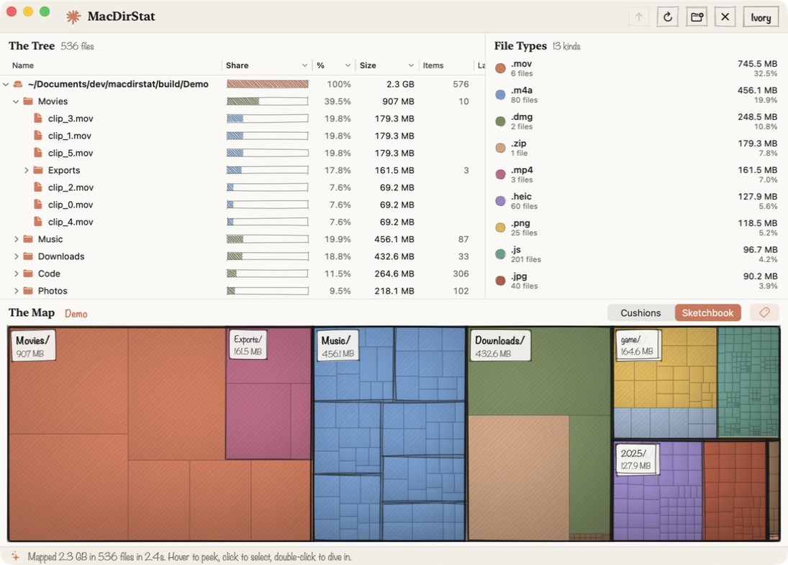

A macOS app that scans a folder and shows where its disk space went, as a sortable tree, a list of file types and a treemap.

AppState runs the window
It holds the tree and runs each scan, zoom and trash.
DiskScanner reads folders
Its worker threads build the tree from getattrlistbulk results.
TreemapCanvas draws The Map
Its layout and render steps turn the tree into one image.
--scan ~/Downloads.DiskScanner finds Movies/trip.mov, 2.1 GB, with a hard link at Archive/trip.mov, and counts its size once.README.md · Sources/MacDirStat/AppState.swift · Sources/MacDirStat/Model/DiskScanner.swift · Sources/MacDirStat/Model/TreeSafety.swift · Sources/MacDirStat/Treemap/TreemapView.swift · Sources/MacDirStat/Views/MainView.swift · Sources/MacDirStat/Views/DirectoryOutline.swift